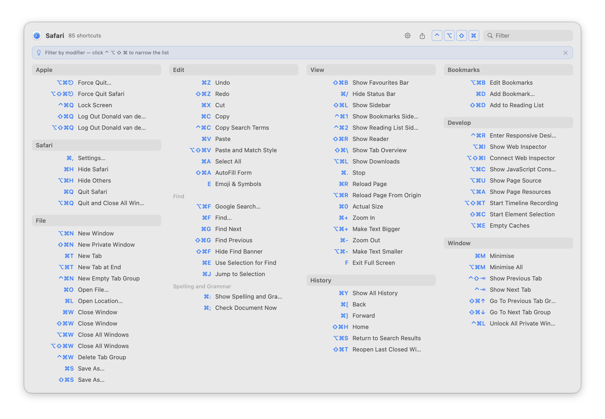

What it does
Instead of hunting through menus to find shortcuts, KeyMinder pops up a clean overview of every keyboard shortcut available in the frontmost app — grouped by menu, triggered by a user-defined hotkey or double-tap on the command, option or control key.
Click any shortcut in the popup to run it immediately. KeyMinder reads menu structures directly via the macOS Accessibility API — the system feature that lets apps read menus and UI elements from other apps — so shortcuts are always accurate and up to date for whatever app you're using.
Search by typing a command name and Tab to it to execute it directly. Toggle or hold modifier keys (⌃ ⌥ ⇧ ⌘) to filter by exact modifier combination. When all shortcuts fit on screen, non-matching rows dim in place so the layout stays stable. There is even an option to show menu items without keyboard shortcuts — these show only when at least two letters of the command are matched.
Pin your most-used shortcuts as favourites — hover any row for the star button — then filter to them instantly with the ★ button in the header. Use Ignored Commands (Settings → Advanced) to suppress noisy menu items globally or per app. A gear button in the popup header opens Settings without closing your workflow.

Click to enlarge
Requirements
Install
- Open
KeyMinder_0.1.101.dmg - Drag
KeyMinder.appto theApplicationsfolder - Open KeyMinder — a welcome wizard guides you through setup
- Follow the wizard to grant Accessibility permission and choose your trigger
Why not on the App Store?
KeyMinder uses the Accessibility API to read other apps' menus. This is fundamentally incompatible with the App Store's mandatory App Sandbox — no entitlement exists to re-open this capability inside the sandbox.
The same constraint applies to all similar tools. KeyMinder is distributed as a notarized Developer ID build and is fully open source.
Privacy
KeyMinder runs entirely on your Mac. It does not collect, transmit, or store any data about you or the apps you use. No analytics, no tracking, no account required. The auto-updater checks keyminder.app/appcast.xml for new versions; no personal information is sent in that request.
What's new
- Completed translations for all 15 non-English languages — the full interface is now localized into Arabic, Danish, Spanish, Finnish, French, Hebrew, Hindi, Italian, Japanese, Norwegian, Dutch, Portuguese, Swedish, Simplified Chinese, and Traditional Chinese
- Export shortcuts — the share button (⬆) in the popup header now asks whether to save as a Markdown file or copy to the clipboard
- Export shortcuts as Markdown — the share button (⬆) in the popup header copies all shortcuts for the current app to the clipboard as a formatted Markdown cheat sheet
- Fixed: global hotkey and double-tap trigger no longer fire while recording a new keyboard shortcut in Settings or the setup wizard
- Conflict indicator (experimental) — a small amber ⚠ icon marks any keyboard shortcut assigned to two or more commands in the same app; enable in Settings → Advanced → Developer → Show conflict indicator
- German translation completed — all interface strings are now fully translated into German
- Fixed: double-tap trigger was not re-armed after granting Accessibility permission inside the welcome wizard
- Fixed: Next button in the wizard's permission step is now disabled until Accessibility access is actually granted
Show earlier releases ▸
- Fixed a duplicate "Check for Updates Automatically" prompt — Sparkle's own first-run dialog is now suppressed; the onboarding wizard is the single place this preference is set
- Welcome wizard — a short guided setup walks new users through granting Accessibility access, choosing a trigger, and configuring launch preferences; replaces the old first-launch Settings open
- Closing the wizard quits KeyMinder; the next launch resumes from the same step so nothing is lost
- The Accessibility step is skipped automatically for users who already granted it
- Three rotating tips appear in the popup on first opens to introduce modifier filtering, search, and favourites
- Press a shortcut's key combination while the popup is open to invoke it directly — run any command without reaching for the mouse
- Fixed: About panel link now opens keyminder.app correctly
- Fixed: "Show when filtering" (Ignored Commands) now works consistently — ignored entries appear dimmed only when your query specifically matches them, regardless of how many shortcuts the app has
- Fixed: auto-updater now starts correctly on launch
- Auto-updater — KeyMinder now checks for updates automatically and notifies you when a new version is available
- "Check for Updates…" added to the right-click context menu on the menu-bar icon
- "Check for updates automatically" toggle added to Settings → General
- Fixed: VoiceOver no longer announces a trailing pause for menu items that have no keyboard shortcut (all-entries mode)
- Fixed: Space-key shortcuts (e.g. ⌘Space for Spotlight) now spoken correctly by VoiceOver — previously announced as "S P A C E"
- Internal stability improvements: removed force-unwraps and hardened private API handling
- New toggle in Settings → General to hide deactivated system shortcuts from the popup
- System shortcuts now sourced live from the Window Server — enabled and disabled states always reflect your current System Settings without a relaunch
- Deactivated system shortcuts shown in a muted state — e.g. a Screenshots shortcut you've turned off in System Settings appears greyed out
- System shortcuts section — Spotlight, Screenshots, Mission Control, and other macOS system shortcuts now appear in their own section in the popup
- Fixed: Accessibility permission dialog no longer overlaps the popup on small screens
- Removed ⌘D shortcut to toggle a favourite — it conflicted with the ⌘ modifier filter
- Gear button in the popup header opens KeyMinder Settings directly — and closes the popup so it's out of the way
- Ignored Apps — add any app to a list in Settings → Advanced and KeyMinder will silently skip it when you trigger the popup
- Ignored Commands now has a master on/off toggle — easily suspend the list without losing it
- "Show when filtering" — when enabled, ignored entries appear dimmed in the popup whenever your search query matches them
- Settings reorganized into General and Advanced tabs for a cleaner layout
- Ignored Commands — suppress named menu items from the popup globally or per app; pre-seeded with common window-management commands (Minimize, Fill, Centre, Move & Resize)
- Press ⌘D while a shortcut row is Tab-selected to pin or unpin it as a favourite — consistent with the browser bookmarking convention
- After closing Settings on first launch, a hint popover on the menu-bar icon shows how to trigger the popup — auto-dismisses after 5 seconds
- Pin favourite shortcuts — hover any row to reveal a star button and click to pin; pinned shortcuts survive popup closes and relaunches
- A ★ button appears in the popup header whenever the current app has pins — click to filter to favourites only; Esc clears it
- Search query is remembered when you dismiss and reopen the popup for the same app — no retyping needed
- Added translations for Hindi, Traditional Chinese, Japanese, Portuguese, Arabic, Danish, Swedish, Norwegian, and Finnish
- Settings window opens automatically on first launch so you can configure your hotkey and double-tap trigger right away
- Full localization support — all user-facing text now adapts to your Mac's system language
- Translations for German, Dutch, Italian, French, Spanish, Simplified Chinese, and Hebrew
- Choose a custom key-badge colour in Settings → Appearance, or follow the system accent colour from System Settings
- Settings now shows an error when a hotkey is already claimed by another app, and no longer saves it
- Fixed: popup could appear empty in all-entries mode for apps where no menu items have keyboard shortcuts
- Fixed: rapid popup toggles could queue multiple concurrent background menu reads
- Fixed: crash (rare) when two top-level menus in an app share the same title
- Modifier filter toggle buttons now announce their state correctly to VoiceOver
- Automated release pipeline: archive, notarize, staple, and deploy in one script
- When all shortcuts fit on screen without scrolling, non-matching rows now dim in place instead of collapsing — the layout stays stable while filtering
- Dimmed rows are non-clickable and skipped by Tab navigation
- Holding a modifier key (⌃ ⌥ ⇧ ⌘) while the popup is open now activates the modifier filter in real time — release to clear
- Toggle buttons and physical key presses work independently and compose: toggling ⌘ and holding ⇧ filters to exactly ⌘⇧
- New modifier key filter: toggle ⌃ ⌥ ⇧ ⌘ buttons in the popup header to show only shortcuts that use exactly those modifiers
- Esc clears the modifier filter before dismissing, same as the text filter
- Internal stability improvements and expanded test coverage
- About panel simplified — no longer shows the internal git commit hash; now shows version, author, and homepage link
- Filter results are now pre-computed once per query change — smoother scrolling and faster Tab navigation in large shortcut lists
- Onboarding screen text updated to clarify that the popup refreshes automatically after granting Accessibility access — no relaunch needed
- New setting to enable debug logging — off by default; toggle under Developer in Settings
- Double-tap trigger completely rewritten — now works reliably after Command-Tab, app switches, and sleep/wake
- Trigger is re-armed automatically when Accessibility permission is granted, so no relaunch is needed after the first-run setup
- Trigger is re-armed automatically after the Mac wakes from sleep
- About panel in the right-click context menu — shows version, author, and a link to the homepage
- Double-tap detection is more reliable — trigger window widened to 500 ms
- Stability improvements: tighter Accessibility error handling and better log privacy
- New setting to show all menu entries in the popup, not just those with keyboard shortcuts
- When "show all entries" is on, the full list appears after typing 2 characters in the filter
- Section headers in "show all" mode can be collapsed to hide their contents
- When filtering, sections with no matches collapse automatically to keep the list compact
- Tab moves focus through visible shortcuts; Return activates the focused one
- Clicking a shortcut in the popup now runs it in the target app — KeyMinder works as a launcher, not just a reference
- After granting Accessibility permission, the popup refreshes automatically — no close-and-reopen needed
- App now has a proper icon
- Full VoiceOver / screen reader support throughout the shortcuts panel
- Settings window adapts to content height — no more clipping at larger text sizes
- Fixed a rare crash when connecting or disconnecting displays
- Stability improvements for rapid popup toggling
- Initial release
- Double-tap trigger — show KeyMinder by quickly pressing a modifier key twice
- Menu scraping runs in the background — no UI freeze while shortcuts load
- Type-to-filter — start typing while the popup is open to highlight matching shortcuts
- Smooth fade-in / fade-out animation with subtle scale when the popup opens
- Popup shown automatically on first launch for discoverability